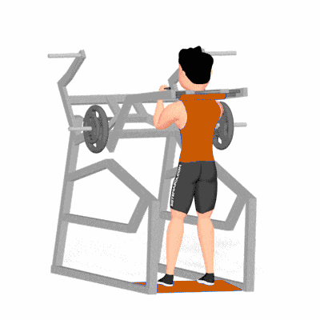

Power Squat

Exercício de força e potência que combina agachamento com ênfase na fase concêntrica explosiva. Trabalha quadríceps, glúteos e posteriores, desenvolvendo força, velocidade e capacidade de impulso. Indicado para praticantes com experiência.
Ficha Técnica
Tipo: Musculação
Grupo Muscular: Perna
Aparelho: Nenhum
Músculos: Nenhum
Como realizar
- Posicione a barra sobre os trapézios e retire-a do suporte com controle;
- Fique em pé com pés na largura dos ombros e pés levemente apontados para fora, abdome contraído;
- Inspire e desça em agachamento até linha paralela ao solo, mantendo coluna neutra;
- Exploda na fase concêntrica, impulsionando o corpo para cima com velocidade controlada;
- Aterre a fase excêntrica controlando a descida e repita conforme a prescrição.
 RC STORE
RC STORE